5' 6" · A goth mad scientist in her early thirties who sings dark synth-pop and dramatic new-wave covers with gleeful, wide-eyed intensity; brilliant, a little unhinged, and delighted by her own genius. Slim and wiry with sharp elbows and quick, twitchy energy, standing upright and level with weight even over both feet; never hunched, sinister or crone-like. Her recognition cues are a jet-black blunt bob with straight-cut bangs and one electric-violet streak on the character-right side, round brass-rimmed goggles with green lenses pushed up onto her forehead, a long white lab coat worn open and flaring at the hem, black lipstick, and black platform boots, all readable without facial detail. The goggles sit on the forehead above the bangs and are never worn over the eyes. She wears a long white lab coat with rolled-up cuffs and a few faint green stains near the hem, open over a fitted black lace-trimmed corset top, a short black pleated skirt over black-and-violet striped tights, black elbow-length rubber lab gloves, and chunky black lace-up platform boots with thick soles. She holds one wireless handheld microphone upright in her gloved character-right hand; no cord, no stand. Her ready stance has feet planted a little apart, one hip cocked, the lab coat hanging open, chin tipped down with a wide delighted grin, and the gloved free character-left hand raised at shoulder height with fingers splayed in a eureka gesture. Palette, as base/shadow/highlight per material: lab coat #ECEBE6 / #B2B0A8 / #FFFFFF; stains #7FBF4A / #4A7A26 / #B2E27F; dark #20232B / #101217 / #3A3E48; gloves #1B1A1E / #0B0B0D / #434148; violet #7A3FC4 / #45207A / #A87AE8; brass #B5893A / #6E5020 / #E0B96A; goggle lens #5FD08A / #2F7A4E / #A2F0BE; skin #E2CEC4 / #AE958A / #F5E7E0; hair #151418 / #08080A / #3C3A42; lip #1B1A1E; eye white #F3EEE8; eye dark #2A1E36. Never draw: goggles worn over the eyes; any headwear other than the goggles; beakers, flasks, syringes, brains, body parts or lab equipment in her hands or on her body; blood, gore or dissection imagery; a sinister sneer, a cackle with a hunched back or a witch silhouette; a closed or buttoned lab coat; pastel or colourful hair beyond the single violet streak; the microphone in the character-left hand; a microphone cord, stand or duplicate microphone; logos, text or real brands.
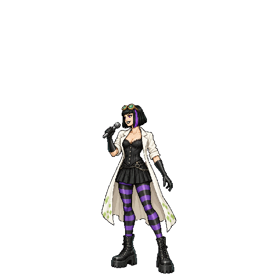
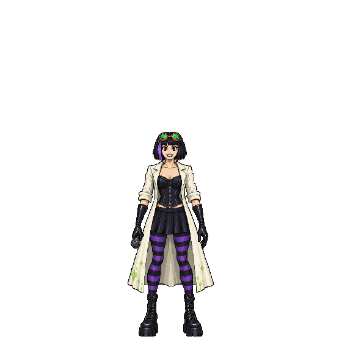
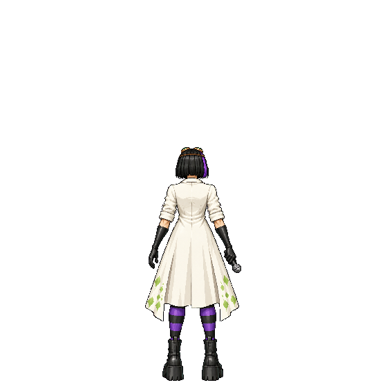
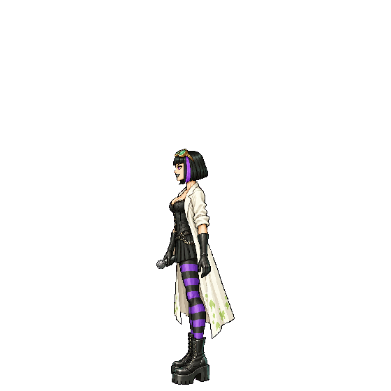
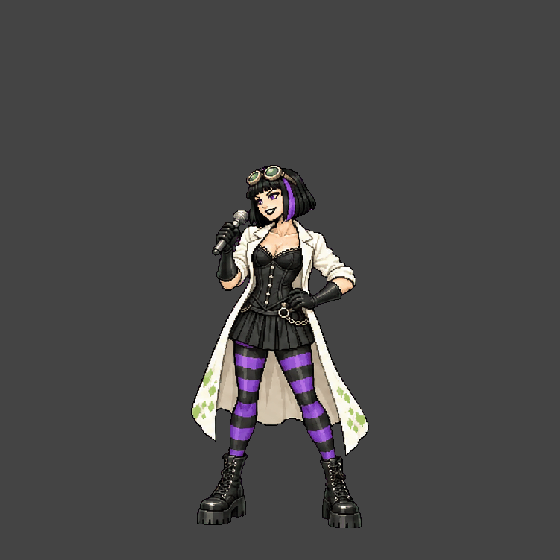
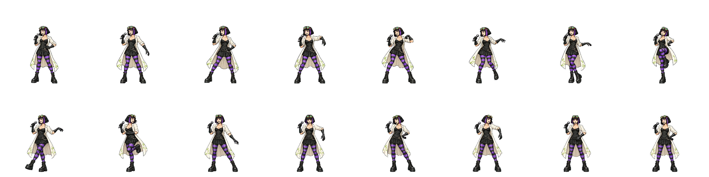
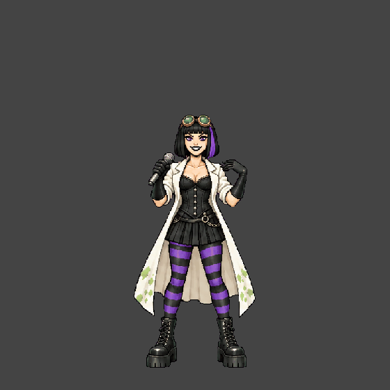
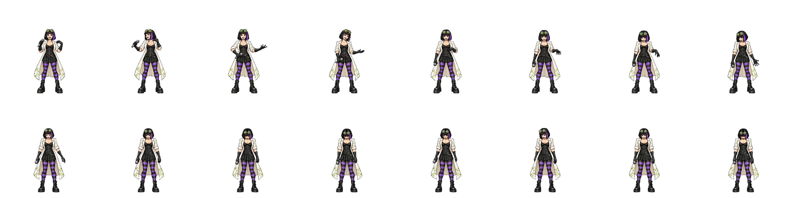
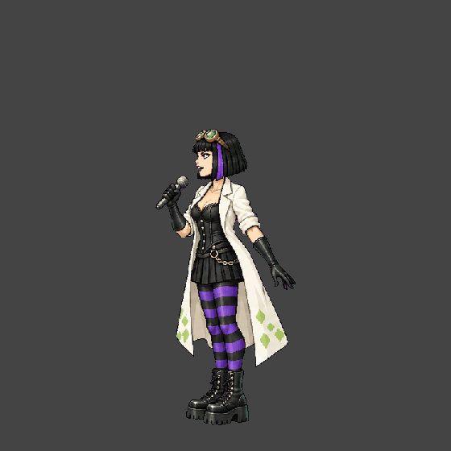
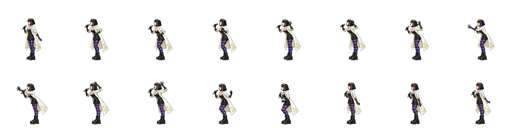
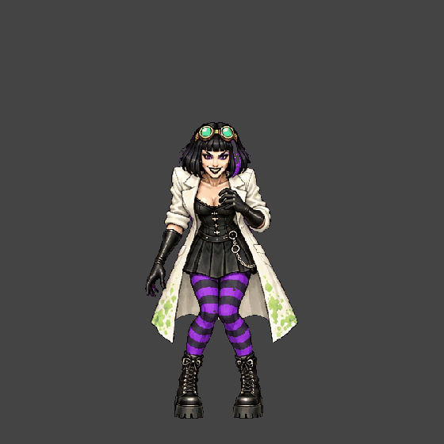
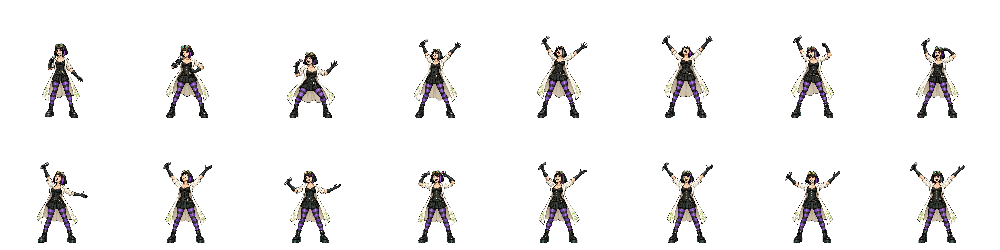